Hand Cranked Persistence-of-Vision Display
A wooden crank attached to a geared mechanism and a clear plastic wiper. You turn the handle. Huzzah! A green display appears out of thin air and whips by before extinguishing! Magic.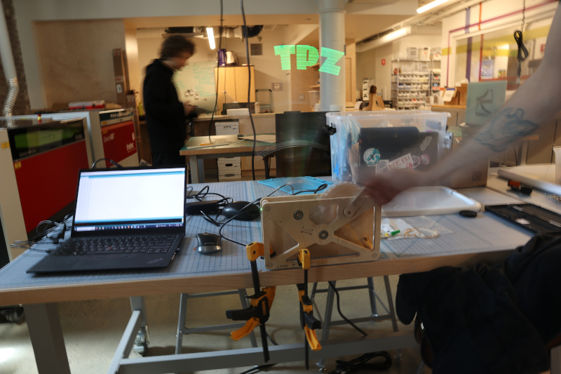
Persistence-of-vision displays rely on the optical illusion created when a light flashes briefly and leaves a visible afterimage. By stringing together a series of these periodic flashes through time and space, one can assemble an image which seems to appear out of nowhere and disappears almost instantly. Commercial rotating LED displays do this continuously to produce circular video screens, while spoke-mounted safety lights (like this wonderful kit from Adafruit) use the rotating bike wheel to achieve the effect. This design uses a long clear wiper to move the pixel array in a large arc; the pixels themselves are the ends of fiber optic strands which transmit light from a display board located lower on the wiper. The image above uses a 1/2-second shutter (hence Matt's blurriness, in addition to being out of focus) to capture the entire TPZ logo; the video below shows the mechanism in action, but the fast shutter misses most of the display:
Right click and unmute to hear the triggering switches and clattering wiper!
Files
Cut files in *.dxf format3D files in not-particularly-useful *.iges format
PCB files via KiCad 5.x, including symbols/footprints
Arduino firmware for an Adafruit KB2040, included free in a few recent orders (thanks!)
Current Status
Works. Turn handle gently, and only ever counter-clockwise.Design
The display started out as a clock; if you look carefully through the design and fabrication files, you'll probably find references to "Clock 4". Beyond that, a number of vague ideas drove design choices, including:desire to use TPZ machines
love of fiber optics
availability of materials
not having much time left
joy inherent to gears and cranks and cams
limit switch fiddling
I used Fusion360 for the design, mostly because I'm quite comfortable in the tool and can quickly use it to model and play with simple kinematics. Fusion360 is a double-edged sword, of course; it wants an internet connection, exports are difficult, version control is platform-based, the free version is progressively more limiting, etc. Alas, the mechanical design files above aren't helpful parameterized parts, but rather *.iges models and *.dxf outlines that should at least be fairly future-proof.
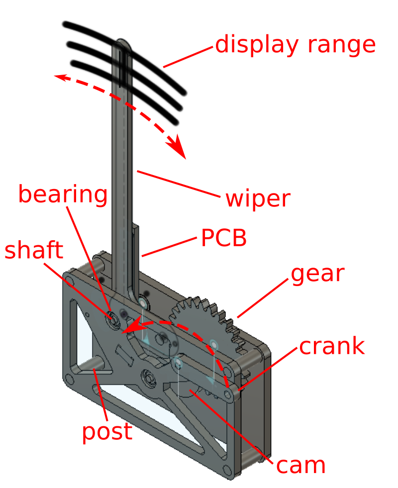
The wiper is the long clear acrylic arm that carries the green bits of the display and swings back and forth. I included dummy pixels in one of the model's sketches, which helped me visualize things like pixel spacing, resolution, digit height, arc angle, etc.:
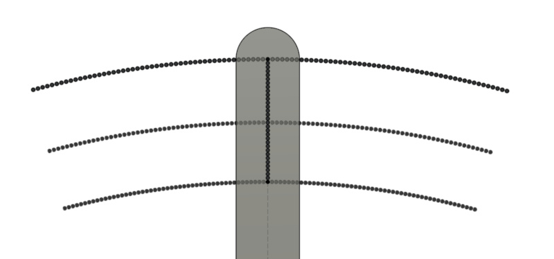
The base is a pair of nearly identical 9 mm (~3/8") plywood plates which are connected with posts and support three free-turning shafts: the crank shaft, the cam shaft, and the wiper shaft. Posts and shafts are both machined from a wooden dowel, with the former sized for a light interference fit and the latter supported by skate bearings. The crank shaft sends user-provided torque from the wooden crank into a 27-tooth wooden gear, which meshes with a 9-tooth wooden gear press-fit onto the cam shaft. This advances a linear 180-degree cam which will effectively produce a sawtooth-then-gap displacement to a follower. The follower is attached to the wiper and tensioned with a rubber band, such that when the cam is rotated the wiper slowly moves left before quickly swinging back to the right and hitting a padded bumper. The wiper also has a little nub opposite the follower, which sequentially triggers a pair of switches to let the electronics know where (roughly) the arm is.
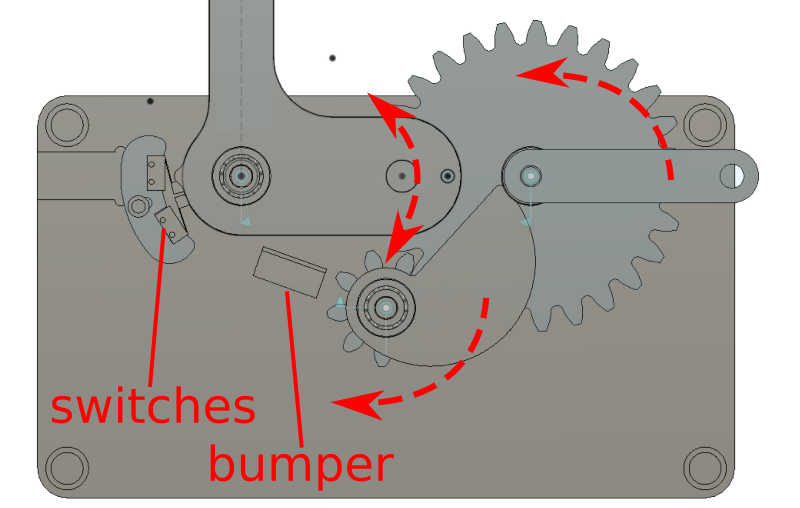
Making the shafts was fun; it gave me an excuse to install, tram, and wake up the rotary axis for the Tormach. Everything got machined down from 3/4" dowel stock using a 1/4" end mill. Lacking 4-axis CAM software, I wrote the G-code by hand to produce simple stepped shafts.
They came out a bit fuzzy, but a quick touch with a sanding pad helped a lot. I also noticed the effects of tool wear, initially starting with a fairly well-worn mill I'd used on some aluminum parts earlier. Switching to a fresh sharp end mill dramatically improved dimensional accuracy and surface finish.
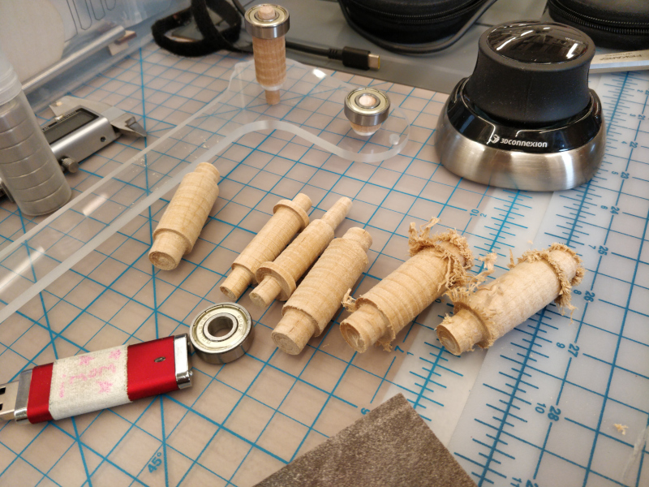
A subtle but important feature is that the display only actuates on the sprung return stroke of the wiper, which should stay consistent regardless of handle rotation speed. That, combined with the fairly constant speed of the wiper after initial acceleration, means subsequent display lines can be clocked using a constant rather than measured wiper speed (although this could be figured out by watching switch timing).
In use, it is best to securely clamp the base to a table or shelf. A pair of quick clamps works and avoids with the mechanism if one is strategic with placement, but a permanent solution would be ideal.
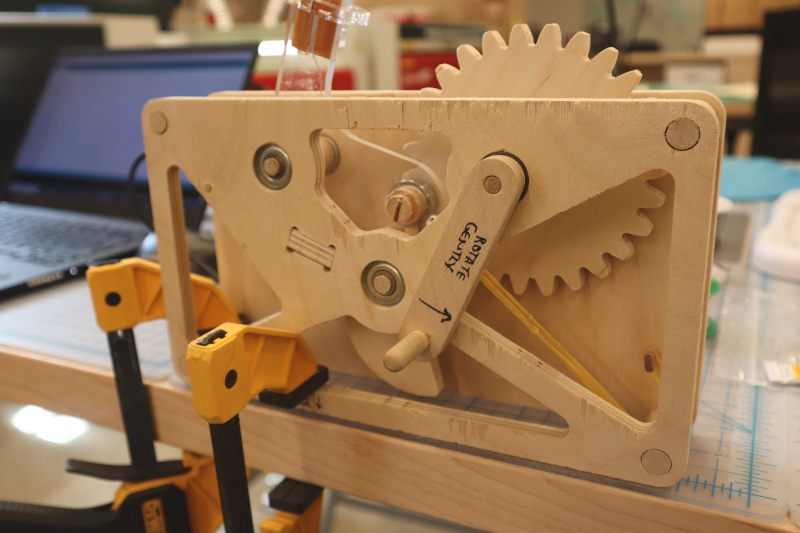
The linear array of 32 display pixels are the flat ends of 1.5 mm plastic fiber optic strands, press-fit into an array of precisely sized holes near the top of the wiper. Why fiber optic strands? They are neat. Also, I wanted to minimize wiper visibility and had already found a nice sheet of 1/4" clear acrylic; press-fit fibers would keep the opaque PCB (even just the LEDs) out of the displayed area. While the outline and mechanical holes on the wiper are cut using the router on the Zund, which provided an excellent machined finish and sufficient parallelism, the fiber holes are laser-cut from the fiber entrace side. Prior to fabricating the wiper, I cut a test coupon with a series of holes to determine the optimal diameter for that particular laser to achieve a tight press-fit. Fortunately, the fiber diameter is consistent enough that a single value worked for all of the holes.
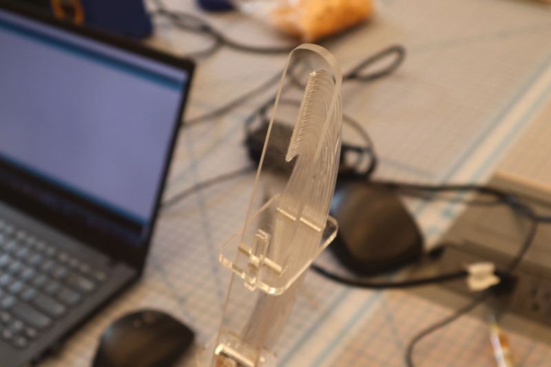
The fibers are routed along the back of the wiper and terminate to another laser cut acrylic piece, this one tasked with holding each fiber above a corresponding LED on the PCB. To minimize light leaks between pixels, I also cut a bit of thick black cardboard with masking bars between each LED, and sandwiched it between the PCB and the fiber-holding acrylic plate. Fibers and various flat bits are secured using acrylic clips and tapered wedges.
The LEDs are grouped into four bytes, each of which is driven by an HC595 shift register and individual current-limiting resistors. The shift registers are daisy-chained and share an OUTPUT_ENABLE pin, so the whole array can be flashed on at once after the latest pixel states are shifted in. As with any PCB design project, there was some iteration between the schematic and the layout; since this is a single-sided board I had to include a few strategic jumpers, such as those shown here on the SELECT, QA, and power lines (one shift register of four shown):
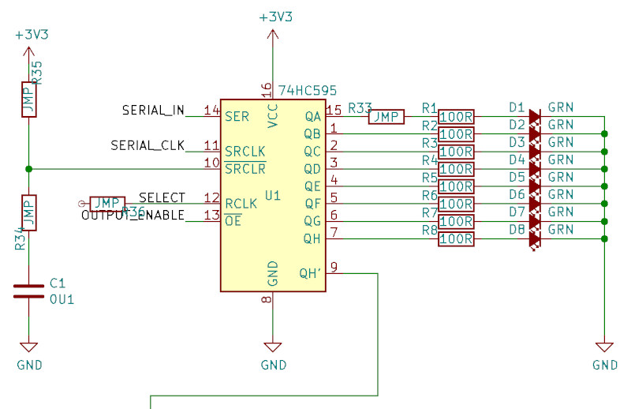
The PCB is sized to fit along the back of the wiper, and includes pads for the serial data stream and other external connections. As usual, I could have allowed myself a bit more space for masking, mounting holes, pads, etc. I used 0.25 mm (10 mil) spaces and traces, intending to use an angled engraving bit rather than my usual 1/64" end mill:
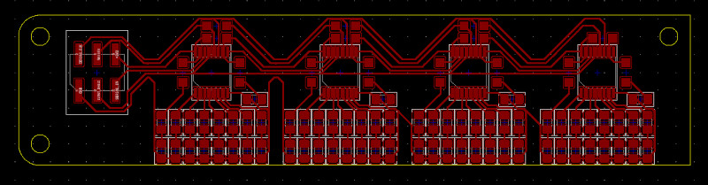
I fabricated the board without incident on the Bantam PCB mill. Assembly started at the middle with the TSSOP-packaged HC595s. I took my time and used plenty of gel flux, SAC 305 lead-free solder, and a 1/16" chisel tip on a 750 F soldering iron, followed by an isopropyl alcohol scrub to clean up:
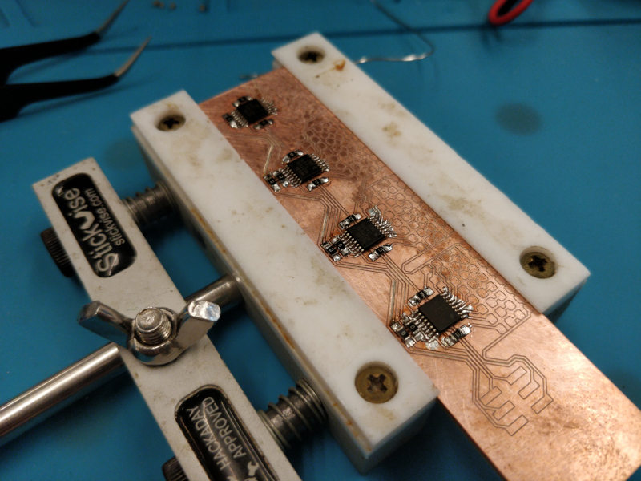
After assembly and a few good continuity-checking sessions (and one or two fixes), I wired the board up to one of the shift registers on one of our free KB2040s. I stuck everything down to a bit of laser cutting scrap (shaped like a bull, in this case) and ran the LEDs through their paces with a simple binary counter program (shown here with the fiber mask installed and a bit of fiber inserted in the acrylic fiber fit test plate):
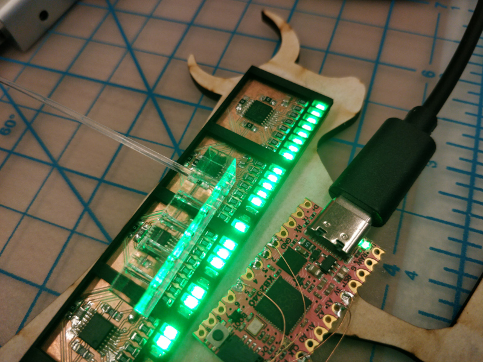
Eventually it all mashes together with the aforementioned acrylic clips and tapered wedges:
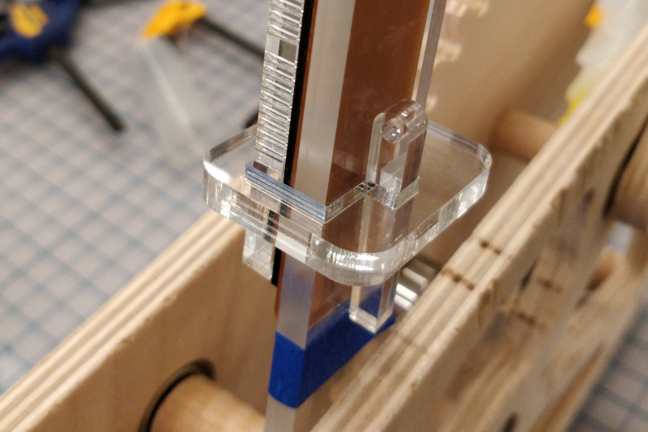
Final fiber installation took some time. I kept the LEDs lit to improve ambiance during routing, trimming, re-trimming, and press-fitting. Fortunately, I was able to cleave the fibers square enough with a box cutter that I didn't need to polish the display ends.
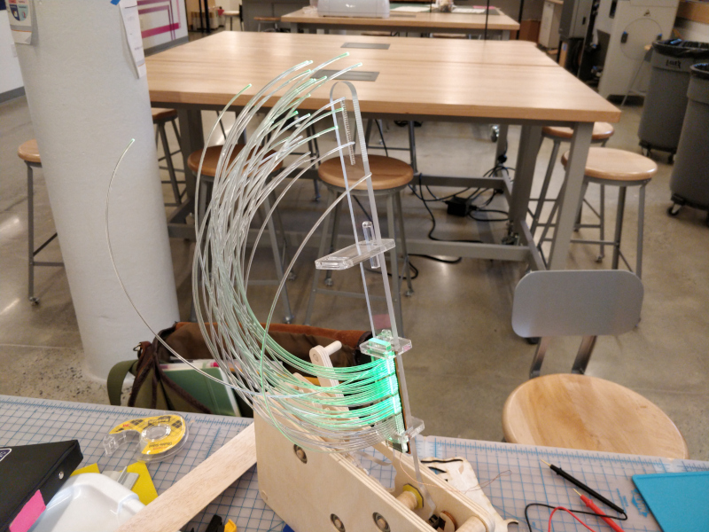
The display board and the two switches are wired to the KB2040 using polyurethane-insulated 34 AWG magnet wire, which is tiny and can be twisted together to form a nicely organized micro-bundle. The microcontroller board snaps into a milled pocket on the rear plywood panel.
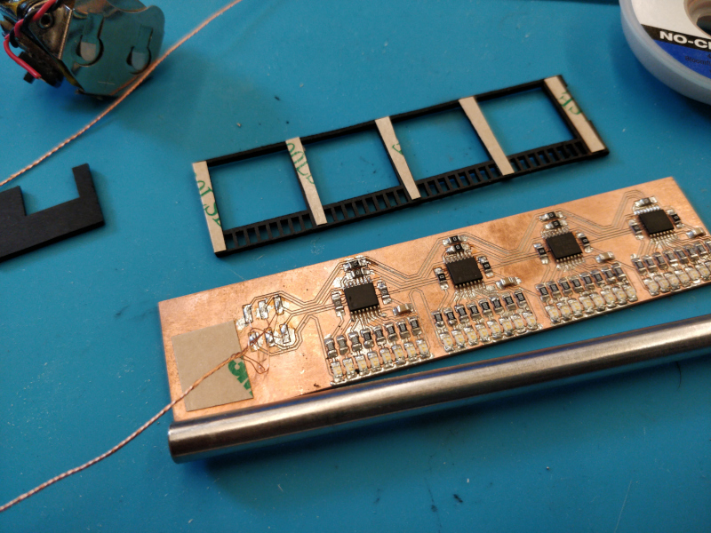
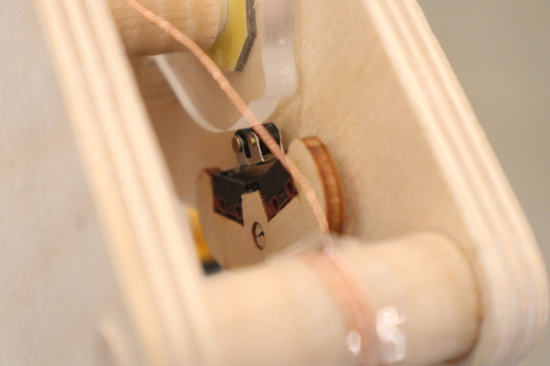
During early testing, a few "shaft securement" faults occured. The follower occasionally loosened and popped out; I'd hoped the stickout was short enough and the fit sufficient to avoid any kind of clip situation, but it still happened enough to be concerning. I tried slitting the end of the shaft and driving in a tiny mahogany wedge, but I think it was ultimately a few dots of cyanoacrylate that held it together:
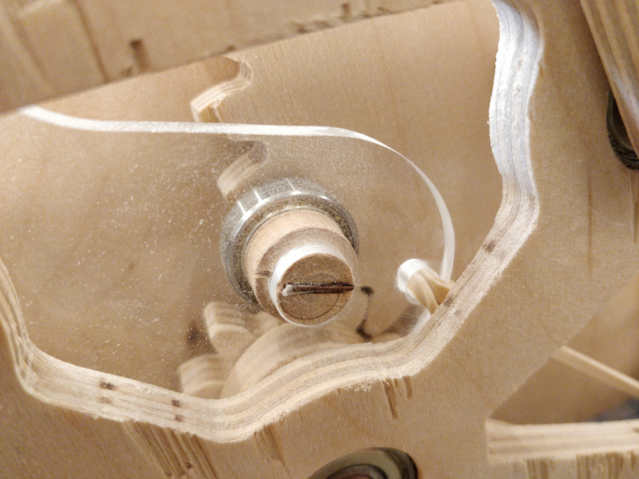
The cam also liked to slip a bit, so I carved a little mahogany pin and carefully drilled a matching hole through the cam and into the cam shaft:
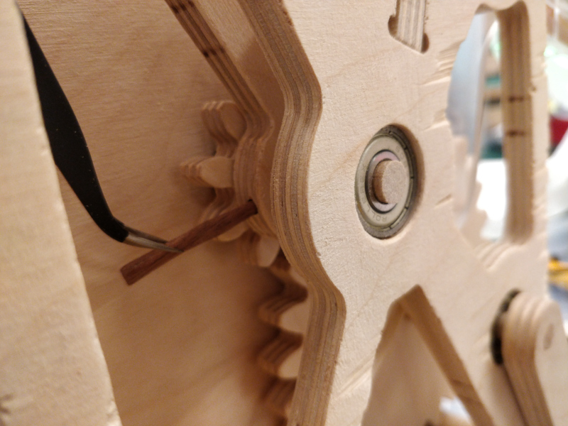
If memory serves, the handle also slipped a bit and was secured with a healthy glob of wood glue.
The firmware is pretty bare-bones, as anyone who has seen one of my electromechanical projects probably expects. Initially, I tried driving the display with my favorite test pattern:
0x55
0xAA
Hexadecimal
55 is 01010101 in binary; AA is 10101010. By alternating these values (well, more precisely, 0x55555555 and then 0xAAAAAAAA, since it's a 4-byte display) I can produce a recognizable calibration checkerboard. To keep things dead simple (and fast), I'm using the SPI peripheral to drive the shift registers:
SPI.beginTransaction(SPISettings(4000000, LSBFIRST, SPI_MODE0));
digitalWrite(SEL, LOW);
SPI.transfer(0x55);
SPI.transfer(0x55);
SPI.transfer(0x55);
SPI.transfer(0x55);
digitalWrite(SEL, HIGH);
SPI.endTransaction();
delayMicroseconds(line_delay);
SPI.beginTransaction(SPISettings(4000000, LSBFIRST, SPI_MODE0));
digitalWrite(SEL, LOW);
SPI.transfer(0xAA);
SPI.transfer(0xAA);
SPI.transfer(0xAA);
SPI.transfer(0xAA);
digitalWrite(SEL, HIGH);
SPI.endTransaction();
delayMicroseconds(line_delay);
I added a bit of logic to watch the limit switches and included two delays:
disp_delay, which set the time between the second limit switch actuation and the start of the display (this ended up being left at 0), and line_delay, which for this set of conditions (spring constant, SPI clock rate, etc) produced square pixels with a value of 400 microseconds. Here is an early test showing a few too many lines; the long exposure shows where the arm bounces back and keeps displaying pixels: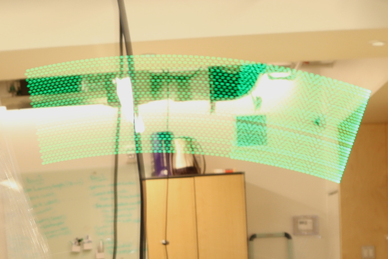
I reduced the number of loop cycles and prepared the display image using a program called LCD Image Converter, which pulls in a black-and-white bitmap and converts it into a series of hex values. Using a utility like this (there are many out there, including some that integrate into image editing tools) allows one to quickly sort through fussy details like reversed bytes:
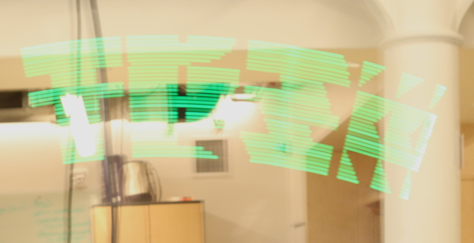
Eventually I putzed my way to a legible TPZ logo. Note the intensity variation between LEDs; based on apparent uniformity on the PCB, I think this is caused by differences in fiber light transmission, likely dominated by variation in end cleaving and coupling losses:
A future revision of this project could address this with selective post-fiber-installation LED resistor adjustments, or perhaps it would go away with better fiber handling practices. I would also want to improve shaft retention (perhaps, at minimum, by machining flats on shafts I don't want to slip), and might eliminate the 3:1 gear advantage to discourage users from spinning the crank too fast. And the paddle is bowing a bit under the combined "coiling-back-up" force of the 32 fibers; it could probably use a brace of some kind.

This work is licensed under a Creative Commons Attribution-ShareAlike 4.0 International License.
© zach fredin, 2023